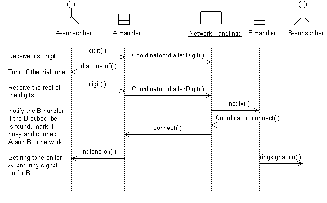

| Рекомендация: Диаграмма последовательности |
 |
|
| Связанные элементы |
|---|
ВведениеОбычно диаграмма последовательности используется для иллюстрации реализации вариантов использования (см. Рабочий продукт: Реализации вариантов использования), т.е. отражения взаимодействия объектов, соответствующего части или всему варианту использования. Взаимодействие объектов, воплощающее вариант использования, иллюстрируется одной или несколькими диаграммами последовательности. Обычно используется одна диаграмма для отражения основного потока событий и по одной для каждого отдельного подпотока варианта использования. Диаграммы последовательности, в частности, важны при проектировании, т.к. они помогают уяснить роли объектов в потоке и, следовательно, предоставляют начальные данные для определения интерфейсов и назначений классов. В отличие от диаграммы связей, диаграмма последовательности включает в себя хронологические последовательности, но не включает в себя информацию о взаимосвязи объектов. Диаграммы последовательности и диаграммы связей несут в себе аналогичную информацию, но представляют ее различными способами. Диаграммы последовательности показывают явные последовательности сообщений и хорошо подходят для наглядного представления хронологического порядка сообщений. Если вас интересуют структурные отношения между взаимодействующими экземплярами, используйте диаграммы связей. См. Метод: Диаграмма связей. Содержание диаграммы последовательностиВ диаграмме последовательности показываются экземпляры объектов и субъектов, а также сообщения, описывающие их взаимодействие. Диаграмма описывает происходящее в объектах-участниках (в форме активаций) и взаимодействие объектов посредством обмена сообщениями. Для каждой версии потока событий варианта использования можно сделать отдельную диаграмму.  Диаграмма последовательности, описывающая часть потока событий варианта использования Обслуживание местного звонка для телефонного коммутатора. ОбъектыОбъект изображается в виде вертикального штрихового пунктира ("генеральная линия"). Генеральная линия указывает на существование объекта в определенное время. Символ объекта рисуется в начале генеральной линии. Имя объекта и его класс выделяются подчеркиванием и разделяются двоеточием: имя-объекта : класс-объекта В диаграмме последовательности объекты можно использовать следующим образом:
СубъектыОбычно экземпляр субъекта представляется первой (самой левой) генеральной линией диаграммы последовательности, как вызывающий взаимодействие. Если в диаграмме имеется несколько субъектов, размещайте их все ближе к краю (либо левому, либо правому). СообщенияСообщение является способом связи между объектами, которые передают информацию, ожидая, что после последует действие. В диаграммах последовательности сообщение показывается как сплошная горизонтальная стрелка от генеральной линии одного объекта к генеральной линии другого. В случае посылки объектом сообщения самому себе, стрелка может начинаться и заканчиваться на одной и той же генеральной линии. Стрелка помечается названием сообщения и значениями его аргументов. Для отражения последовательности сообщений во взаимодействии в целом стрелка также может помечаться порядковым номером. На диаграммах последовательности, для которых положение стрелок показывает их последовательность относительно друг друга, порядковые номера часто опускаются Сообщение может быть свободным, т.е. иметь в качестве имени общее описание сообщения и не соответствовать какой-либо конкретной операции объекта, принимающего сообщение. Поставить в соответствие такому сообщению операцию целевого объекта можно позже. Соответственно, имя сообщения станет равным имени операции. СценарииСценарий содержит текстуальное описание потока событий. Размещайте сценарии слева от генеральных линий, так, чтобы можно было анализировать весь поток сверху вниз (см. рисунок выше). Сценарии можно прикреплять к сообщениям, что в случае перемещения сообщения также приведет к перемещению сценария. Распределение управляющего потока в диаграмме последовательностиЦентрализованное управление потоком событий или его частью означает, что поток контролируется несколькими объектами путем посылки командных и получения ответных сообщений от остальных объектов. Контролирующие объекты определяют порядок активации других объектов в варианте использования. При этом взаимодействие остальных объектов сведено к минимуму или вообще отсутствует. Пример В варианте использования системы утилизации, Печать ежедневного отчета, отслеживается, среди прочего, число и тип возвращаемых объектов, а затем фиксируется итоговая информация. Контролирующий объект Генератор отчетов определяет порядок, в котором будут извлекаться и записываться суммы.
Поведение варианта использования Печать ежедневного отчета сосредоточено в объекте Генератор отчетов. Это пример централизованного управления. В данном случае используется такая структура прежде всего из-за того, что различные фазы потока событий взаимонезависимы. Главным преимуществом такого подхода является то, что объекты не должны следить за итогами следующего объекта. Для изменения порядка фаз необходимо сделать соответствующие изменения только в управляющем объекте. Кроме того, аналогичным образом можно добавить новую фазу, например, при появлении нового типа возвращаемого объекта. Другим преимуществом централизованной структуры является простота повторного использования фаз в других вариантах использования, т.к. логика сортировки не встроена в сами объекты. Децентрализованное управление означает, что объекты-участники обмениваются сообщениями между собой непосредственно, без участия контролирующих объектов. Пример Вариант использования Отправка письма отражает посылку письма в другую страну через почтовое отделение. Сначала письмо посылается в страну адресата. В ней оно направляется в указанный город. В городе, в свою очередь, оно доставляется домой адресату.
Поведение варианта использования Отправка письма децентрализованное. Поведение варианта использования - децентрализованный поток событий. Фазы потока взаимозависимы. Отправитель посылает письмо конкретному адресату. Ему не требуется знать о подробностях доставки писем (если бы письмо посылалось внутри страны, то выполнялись бы не все фазы) Подходящий тип поведения зависит от приложения. Вообще, следует стремиться создавать независимые объекты, т.е. передавать различные задачи объектам, наиболее подходящим для их выполнения. Потоку событий с централизованным управлением соответствует "вилообразная" диаграмма последовательности, тогда как прямолинейная диаграмма последовательности свидетельствует о децентрализованном управлении.
Потоку событий с централизованным управлением соответствует "вилообразная" диаграмма последовательности. Потоку событий с децентрализованным управлением соответствует прямолинейная диаграмма последовательности. Поведенческая структура реализации варианта использования чаще всего является смесью централизованной и децентрализованной. Децентрализованная структура подходит для следующих случаев:
Централизованная структура подходит для следующих случаев:
|
© Copyright IBM Corp. 1987, 2006. Все права защищены.. |